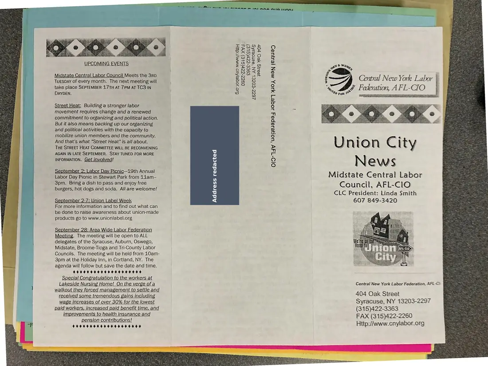
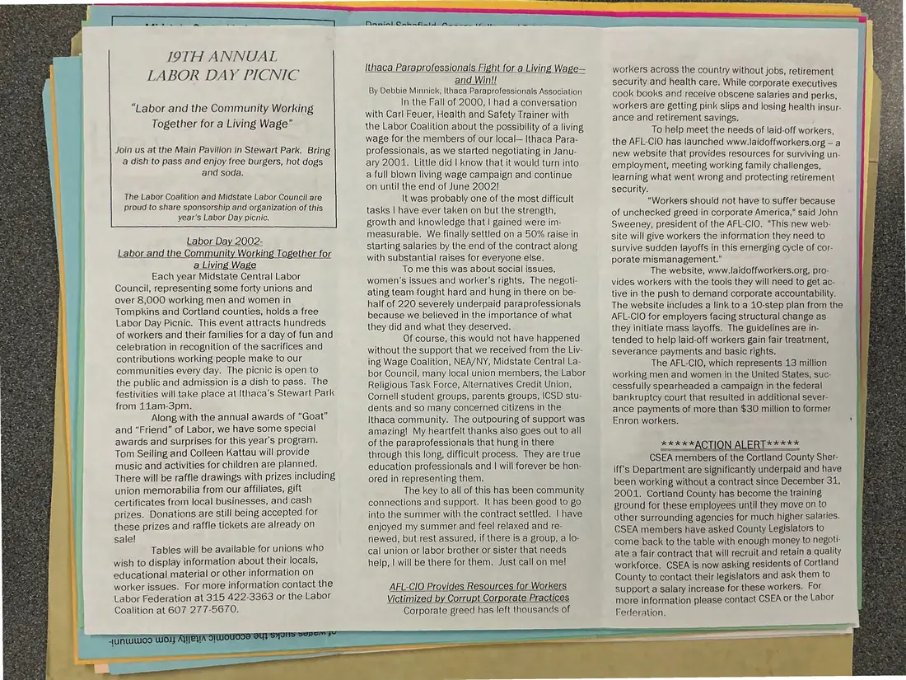
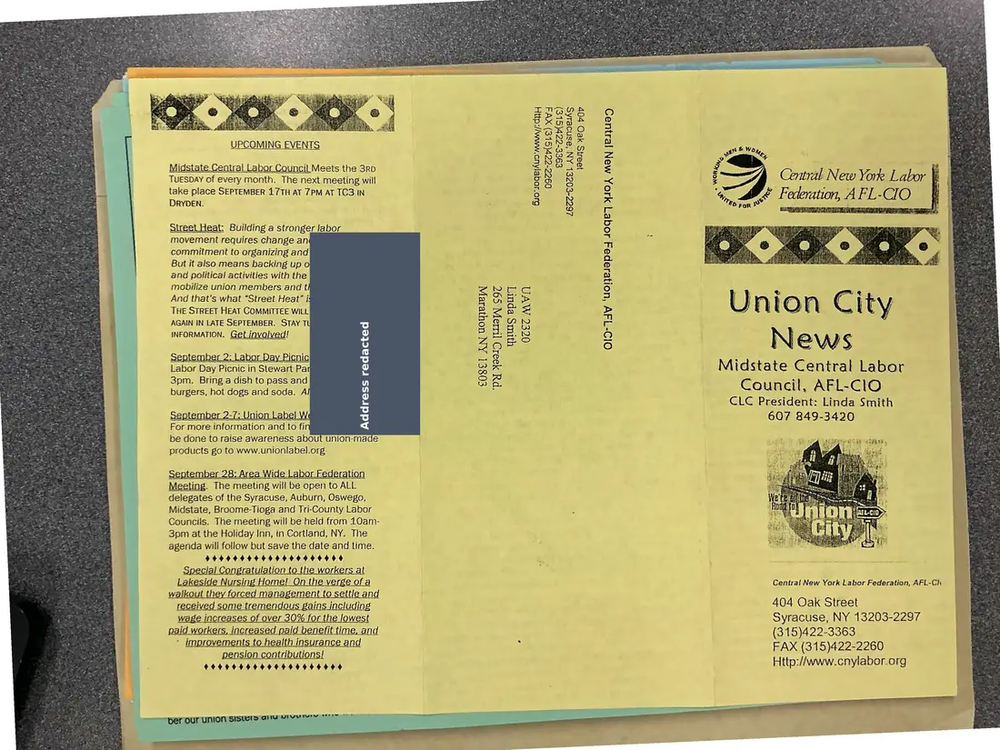
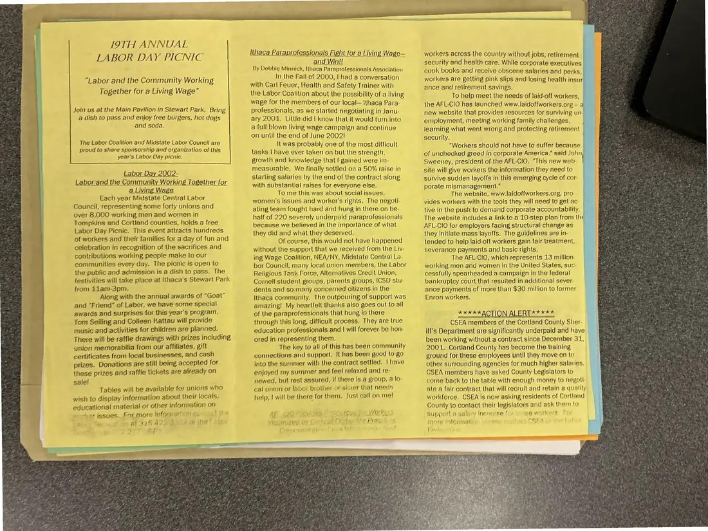
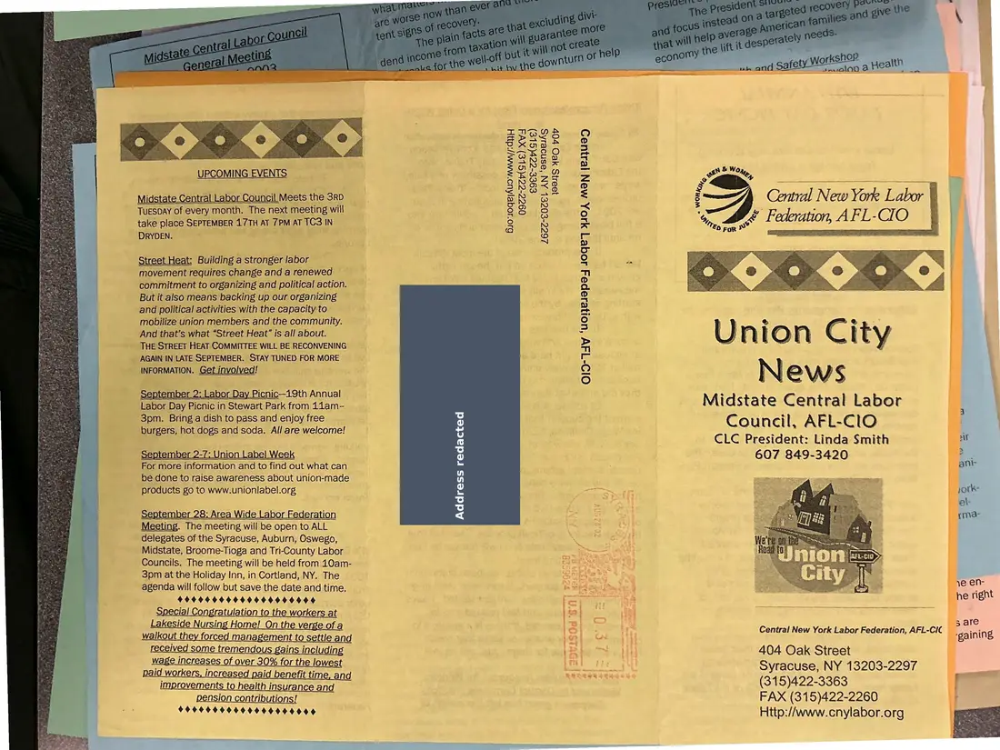
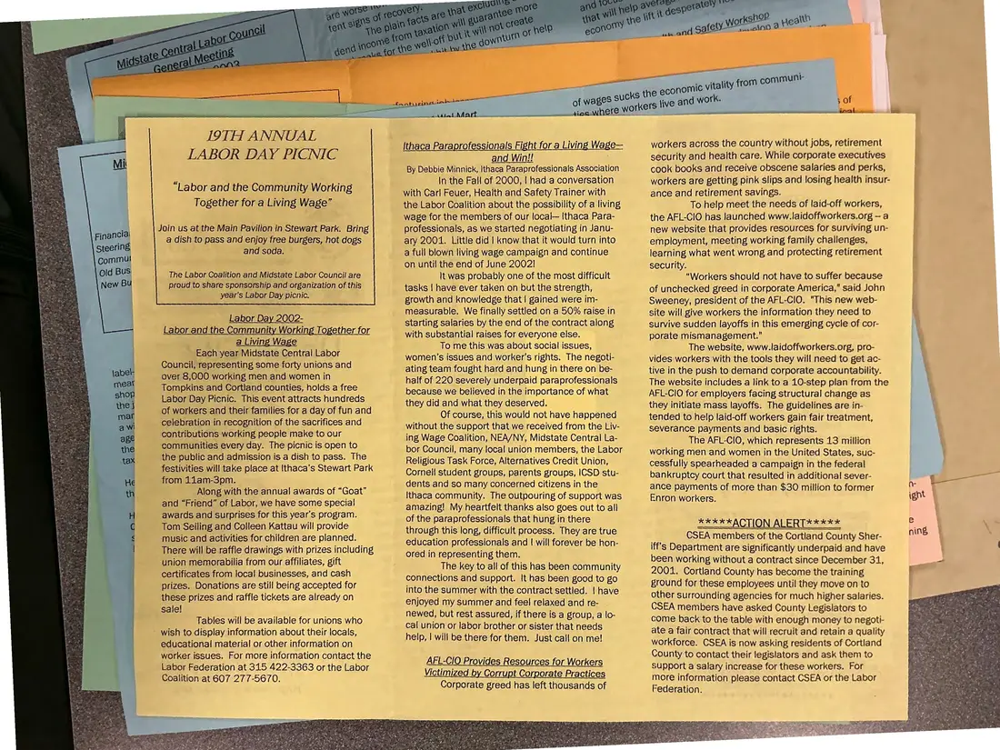

Newsletter, 2 pages, plus 2 additional copies
Union City News, Midstate Central Labor Council, September 2002
September 2002
This issue promotes the 19th Annual Labor Day Picnic (“Labor and the Community Working Together for a Living Wage”). It also covers Ithaca paraprofessionals' fight for a living wage and AFL-CIO resources for workers hurt by corporate wrongdoing. Three copies were photographed.
Download or cite this itemPages


(open zoom view)A mailing label with a personal address has been covered on this page.
Read the page text (machine-read, contains errors)
This text was generated automatically from the photograph and has not been corrected. The image is the authoritative record.
eee 5 tate am tla a dare oY Ey JAE PAA AD
UPCOMING EVENTS
Midstate Central Labor Council Meets the 3Rb
TueSDAY of every month. The next meeting will
take place SEPTEMBER 17TH AT 7PM AT TC3 IN
DRYDEN.
si & Woz,
A A j
ZF Central New York Labor ;
4, & Federation, AFL-CIO {
Tey 14 yo?
Fol
e9ee-ezr(SLe)
16ZZ-E0ZE} AN ‘esnoesks
1B2.NS HEO FOP
Kin,
610 JOGe|AUD MMM): cd}
09%2-ZZp(SLE) xV4
« WOR
Street Heat: Building a stronger labor
movement requires change and a renewed
commitment to organizing and political action.
But it also means backing up our organizing
and political activities with the capacity to
mobilize union members and the community.
And that’s what “Street Heat” is all about.
THE STREET HEAT COMMITTEE WILL BE RECONVENING
AGAIN IN LATE SEPTEMBER. STAY TUNED FOR MORE
INFORMATION. Get involved!
Union City
News
Midstate Central Labor
Council, AFL-ClO
CLC President: Linda Smith
607 849-3420
O1D-TAV “UOHeiapey JOGe7] 410, MAN |24}UaD
September 2: Labor Day Picnic—19th Annual
Labor Day Picnic in Stewart Park from 11am-
3pm. Bring a dish to pass and enjoy free
burgers, hot dogs and soda. All are welcome!
xo)
september 2-7: Union Label Week
For more information and to find out what can
be done to raise awareness about union-made
products go to www.unionlabel.org
September 28: Area Wide Labor Federation
Meeting. The meeting will be open to ALL
delegates of the Syracuse, Auburn, Oswego,
Midstate, Broome-Tioga and Tri-County Labor
Councils. The meeting will be held from 10am-
3pm at the Holiday Inn, in Cortland, NY. The
agenda will follow but save the date and time.
HOHE HEHEOOOHHEOHOSD
| Special! Congratulation to the workers at
Lakeside Nursing Home! On the verge of a Central New York Labor Federation, AFL-Ci. |
walkout they forced management to settle and
received some tremendous gains including 404 Oak Street
wage increases of over 30% for the lowest Syracuse, NY 13203-2297
paid workers, increased pajd benefit time, and (315)422-3363
Cpniaaaenrrn matin amr FAX (315)422-2260
$649040060466006000 Http:/Awww.cnylabor.org

(open zoom view)Read the page text (machine-read, mostly readable)
This text was generated automatically from the photograph and has not been corrected. The image is the authoritative record.
19TH ANNUAL LABOR DAY PICNIC “Labor and the Community Working Together for a Living Wage” Join us at the Main Pavilion in Stewart Park. Bring a dish to pass and enjoy free burgers, hot dogs and soda. The Labor Coalition and Midstate Labor Council are proud to share sponsorship and organization of this year’s Labor Day picnic. Labor Day 2002- Labor and the Community Working Together for a Living Wage Each year Midstate Central Labor Council, representing some forty unions and over 8,000 working men and women in Tompkins and Cortland counties, holds a free Labor Day Picnic. This event attracts hundreds of workers and their families for a day of fun and celebration in recognition of the sacrifices and contributions working people make to our communities every day. The picnic is open to the public and admission is a dish to pass. The festivities will take place at Ithaca’s Stewart Park from 11am-3pm. Along with the annual awards of “Goat” and “Friend” of Labor, we have some special awards and surprises for this year’s program. Tom Seiling and Colleen Kattau will provide music and activities for children are planned. There will be raffle drawings with prizes including union memorabilia from our affiliates, gift certificates from local businesses, and cash prizes. Donations are still being accepted for these prizes and raffle tickets are already on sale! Tables will be available for unions who wish to display information about their locals, educational material or other information on worker issues. For more information contact the Labor Federation at 315 422-3363 or the Labor Coalition at 607 277-5670. thaca Paraprofessionals Fight for a Living Wage— and Win!! By Debbie Minnick, Ithaca Paraprofessionals Association In the Fall of 2000, | had a conversation with Carl Feuer, Health and Safety Trainer with the Labor Coalition about the possibility of a living wage for the members of our local— Ithaca Para- professionals, as we started negotiating in Janu- ary 2001. Little did | know that it would turn into a full blown living wage campaign and continue on until the end of June 2002! It was probably one of the most difficult tasks | have ever taken on but the strength, growth and knowledge that | gained were im- measurable. We finally settled on a 50% raise in starting salaries by the end of the contract along with substantial raises for everyone else. To me this was about social issues, women’s issues and worker's rights. The negoti- ating team fought hard and hung in there on be- half of 220 severely underpaid paraprofessionals because we believed in the importance of what they did and what they deserved. Of course, this would not have happened without the support that we received from the Liv- ing Wage Coalition, NEA/NY, Midstate Central La- bor Council, many local union members, the Labor Religious Task Force, Alternatives Credit Union, Cornell student groups, parents groups, |CSD stu- dents and so many concerned citizens in the Ithaca community. The outpouring of support was amazing! My heartfelt thanks also goes out to all of the paraprofessionals that hung in there through this long, difficult process. They are true education professionals and | will forever be hon- ored in representing them. The key to all of this has been community connections and support. It has been good to go into the summer with the contract settled. | have enjoyed my summer and feel relaxed and re- newed, but rest assured, if there is a group, a lo- cal union or labor brother or sister that needs help, | will be there for them. Just call on me! AFL-CIO Provides Resources for Workers Victimized by Corrupt Corporate Practices Corporate greed has left thousands of workers across the country without jobs, retirement security and health care. While corporate executives cook books and receive obscene salaries and perks, workers are getting pink slips and losing health insur- ance and retirement savings. To help meet the needs of laid-off workers, the AFL-CIO has launched www.laidoffworkers.org — a new website that provides resources for surviving un- employment, meeting working family challenges, learning what went wrong and protecting retirement security. “Workers should not have to suffer because of unchecked greed in corporate America,” said John Sweeney, president of the AFL-CIO. "This new web- site will give workers the information they need to survive sudden layoffs in this emerging cycle of cor- porate mismanagement." The website, www.laidoffworkers.org, pro- vides workers with the tools they will need to get ac- tive in the push to demand corporate accountability. The website includes a link to a 10-step plan from the AFL-CIO for employers facing structural change as they initiate mass layoffs. The guidelines are in- tended to help laid-off workers gain fair treatment, severance payments and basic rights. The AFL-CIO, which represents 13 million working men and women in the United States, suc- cessfully spearheaded a campaign in the federal bankruptcy court that resulted in additional sever- ance payments of more than $30 million to former Enron workers. KEKKKAC] ION Al ER I kKAKKKK CSEA members of the Cortland County Sher- iff's Department are significantly underpaid and have been working without a contract since December 31, 2001. Cortland County has become the training ground for these employees until they move on to other surrounding agencies for much higher salaries. CSEA members have asked County Legislators to come back to the table with enough money to negoti- ate a fair contract that will recruit and retain a quality workforce. CSEA is now asking residents of Cortland County to contact their legislators and ask them to support a salary increase for these workers. For more information please contact CSEA or the Labor Federation.
Additional copies
The same document was photographed more than once. These copies may carry different handwriting, stamps, or paper.


(open zoom view)A mailing label with a personal address has been covered on this page.
Read the page text (machine-read, contains errors)
This text was generated automatically from the photograph and has not been corrected. The image is the authoritative record.
UPCOMING EVENTS nu & Wo we fe, e9ce-czr(SLe) 26CC-E0ZEL AN ‘“esnoesAsS JB2HS ACO Or Midstate Central Labor Council Meets the 3rD Tuesbay of every month. The next meeting will take place SEPTEMBER 17TH AT 7PM AT TC3 IN DRYDEN. Bio-loge|Aus- www: dH 0922-ezr(SLe) xv 4, LO £0 For ww street Heat: Building a stronger labor movement requires change an commitment to organizing and But it also means backing up o| and political activities with the mobilize union members and th And that’s what “Street Heat” is THE STREET HEAT COMMITTEE WILL AGAIN IN LATE SEPTEMBER. STAY TU INFORMATION. Get involved! Labor Day Picnic in Stewart Par 3pm. Bring a dish to pass and burgers, hot dogs and soda. Al Union City News Midstate Central Labor Council, AFL-Clo = CLC President: Linda Smith September 21: Union Label Wi 3 607 849-3420 For more information and to fin q be done to raise awareness about union-made products go to www.unionlabel.org September 28: Area Wide |_abor Federation Meeting. The meeting will be open to ALL delegates of the Syracuse, Auburn, Oswego, Midstate, Broome-Tioga and Tri-County Labor Councils. The meeting will be held from 10am- 3pm at the Holiday Inn, in Cortland, NY. The agenda will follow but save the date and time. 9949949444 649004446464 Special Congratulation to the workers at Lakeside Nursing Home! On the verge of a Central New York Labor Federation, AFL-Chi walkout they forced management to settle and received some tremendous gains including 404 Oak Street wage increases of over 30% for the lowest Syracuse, NY 13203-2297 paid workers, increased paid benefit time, and (315)422-3363 * improvements to health insurance and FAX (315)422-2260 pension contributions! ; CHOOOHHOOOESOOONOOOS Http://www.cnylabor.org OcecT MV Uiturs epury OlD-T4V “UoHelepey Joqe7 YIOA MAN jBs}UaD COSC AN Woulereyy Pa AeetD THUS 697 BEF OUF UNION SISLETD ante ryernre tre


(open zoom view)Read the page text (machine-read, mostly readable)
This text was generated automatically from the photograph and has not been corrected. The image is the authoritative record.
I9TH ANNUAL LABOR DAY PICNIC “Labor and the Community Working Together for a Living Wage” Join us at the Main Pavilion in Stewart Park. Bring a dish to pass and enjoy free burgers, hol dogs and soda. The Labor Coalition and Midstate Labor Council are proud to share sponsorship and organization of this year’s Labor Day picnic, Labor Day 2002- Labor and the Community Working Together for a Living Wage Each year Midstate Central Labor Council, representing some forty unions and over 8,000 working men and women in Tompkins and Cortland counties, holds a free Labor Day Picnic. This event attracts hundreds of workers and their families for a day of fun and celebration in recognition of the sacrifices and contributions working people make to our communities every day. The picnic is open to the public and admission is a dish to pass. The festivities will take place at Ithaca’s Stewart Park from 11am-3pm. Along with the annual awards of “Goat” and “Friend” of Labor, we fave some special awards and surprises for this year's program. Tom Seiling and Colleen Kattau will provide music and activities for children are planned. There will be raffle drawings with prizes including union memorabilia from our affiliates, gift certificates from local businesses, and cash prizes. Donations are still being accepted for these prizes and raffle tickets are already on salel Tables will be available for unions who wish to display information about their locals, educational material or other information on worker issues. For more infoanr’ On Con! gt the Lats Cac’ sf.0 af 318 4228208 oF ihe? sor Cte: 2 7.277 S674 Ithaca Paraprofessionals Fight for a Living Wage— and Win!! By Debbie Minnick, IIhaca Paraprofessionals Association In the Fall of 2000, | had a conversation with Carl Feuer, Health and Safety Trainer with the Labor Coalition about the possibility of a living wage for the members of our local—\thaca Para- professionals, as we started negotiating in Janu- ary 2001. Little did I know that it would turn into a full blown living wage campaign and continue on until the end of June 2002) li was probably one of the most difficult tasks | have ever taken on bul the strength, growth and knowledge thal! gained were im- measurable. We finally settled on a 50% raise in starting salaries by the end of the contract along with substantial raises for everyone else. To me this was about social issues, women’s issues and worker's rights. The negoli- ating team fought hard and hung in there on be- half of 220 severely underpaid paraprofessionals because we believed in the importance of what they did and what they deserved. Of course, this would not have happened without the support that we received from the Liv- ing Wage Coalition, NEA/NY, Midstate Central La- bor Council, many local union members, the Labor Religious Task Force, Alternatives Credit Union, Comell student groups, parents groups, ICSD stu- dents and so many concerned cilizens in the \thaca community, The outpouring of support was amazing! My heartfelt thanks also goes out to all of the paraprofessionals that hung in there through this long, difficult process. They are true education professionals and | will forever be hon- ored in representing them, The key lo all of this has been community comiections and support. It has been good to go into the summer wilh the contract settled. | have enjoyed my summer and feel relaxed and re- newed, but rest assured, if there is a group, a lo- cal union of labor brother of sister that needs help, | will be there for them, Just call on mel Af Gio Provides © seurezs for Works .3 Vintinized oy Coctupt Compe ate Pracile os fieranraie pier f pai tee! aii a nt workers across the country without jobs, retirement. security and health care. While corporate executives cook books and receive obscene salaries and perks, workers are getting pink slips and losing health insur ance and retirement savings. To help meet the needs of laid-off workers, the AFL-CIO has launched www.laidoffworkers.org ~ a new website that provides resources for surviving un- employment, meeting working family challenges, learning what went wrong and protecting retirement security. “Workers should not have to suffer because of unchecked greed in corporate America,” said John Sweeney, president of the AFL-CIO. “This new web- site will give workers the information they need to survive sudden layoffs in this emerging cycle of cor- porate mismanagement.” The website, www.laidoffworkers.org, pro- vides workers with the tools they will need to get ac- tive in the push to demand corporate accountability. The website includes a link to a 10-step plan from the AFL-CIO for employers facing structural change as they initiate mass layoffs. The guidelines are in- terided to help laid-off workers gain fair treatment, severance payments and basic rights. The AFL-CIO, which represents 13 million working men and women in the United States, suc- cessfully spearheaded a campaign in the federal bankruptcy court that resulted in additional sever ance payments of more than $30 million to former Enron workers. KAEX* ACTION ALER(AX* 4 CSEA members of the Cortland County Shier- iff's Department are significantly underpaid and have been working without a contract since December 31, 2001. Cortland County has become the training ground for these employees until they move on lo other surrounding agencies for much higher salaries. CSEA members have asked County Legislators to come back to the table with enough money to negoll- ate a fair contract that will recruit and retain a quality workforce. CSEA is now asking residents of Cortland County to contact their legislators and ask them to support a salary Incrense for ‘oewe workers. Tor more information please contact CSEA oF the la! Verlajatha


(open zoom view)A mailing label with a personal address has been covered on this page.
Read the page text (machine-read, mostly readable)
This text was generated automatically from the photograph and has not been corrected. The image is the authoritative record.
UPCOMING EVENTS Midstate Central Labor Council Meets the 3rD TUESDAY of every month. The next meeting will take place SEPTEMBER 17TH AT 7PM AT TC3 IN DRYDEN. Street Heat: Building a stronger labor movement requires change and a renewed commitment to organizing and political action. But it also means backing up our organizing and political activities with the capacity to mobilize union members and the community. And that’s what “Street Heat” is all about. THE STREET HEAT COMMITTEE WILL BE RECONVENING __ AGAIN IN LATE SEPTEMBER. STAY TUNED FOR MORE INFORMATION. Get involved! September 2: Labor Day Picnic—19th Annual Labor Day Picnic in Stewart Park from 11am- 3pm. Bring a dish to pass and enjoy free burgers, hot dogs and soda. All are welcome! For more information and to find out what can be done to raise awareness about union-made products go to www.unionlabel.org Meeting. The meeting will be open to ALL delegates of the Syracuse, Auburn, Oswego, _ Midstate, Broome-Tioga and Tri-County Labor Councils. The meeting will be held from 10am- 3pm at the Holiday Inn, in Cortland, NY. The agenda will follow but save the date and time. 49494409 4O40404940004 special Congratulation to the workers at Lakeside Nursing Home! On the verge of a walkout they forced management to settle and received some tremendous gains including wage increases of over 30% for the lowest id workers, increased paid benefit time, and improvements to health insurance and pension contributions! $9094 O400469406050006 xe) Bio u0ge|Aus-mMawy/:dH 09¢z-zer(SL¢e) xvA e9ee-zzrl(SL¢) 26Z7Z-€0ZEL AN ‘esnoeshs yes AeO vOV fe) re) ley ce) Lae fe) Geni New ons baboon LEI AFL- CIO Union City News Midstate Central Labor Council, AFL-ClO CLC President: Linda Smith 607 849-3420 Central New York Labor Federation, AFL-CIC N “gaining 404 Oak Street Syracuse, NY 13203-2297 nea (315)422-3363 f FAX (315)422-2260 } Http://www.cnylabor.org


(open zoom view)Read the page text (machine-read, mostly readable)
This text was generated automatically from the photograph and has not been corrected. The image is the authoritative record.
LABOR DAY PICNIC
“Labor and the Community Working
Together for a Living Wage”
Join us at the Main Pavilion in Stewart Park. Bring
a dish to pass and enjoy free burgers, hot dogs
and soda.
The Labor Coalition and Midstate Labor Council are
proud to share sponsorship and organization of this
year’s Labor Day picnic,
Labor Day 2002-
Labor and the Community Working Together for
’ : a Living Wage
Each year Midstate Central Labor
Council, representing some forty unions and
over 8,000 working men and women in
Tompkins and Cortland counties, holds a free
Labor Day Picnic. This event attracts hundreds
of workers and their families for a day of fun and
celebration in recognition of the sacrifices and
contributions working people make to our
communities every day. The picnic is open to
the public and admission is a dish to pass. The
festivities will take place at Ithaca's Stewart Park
from 11am-3pm.
Along with the annual awards of “Goat”
and “Friend” of Labor, we have some special
awards and surprises for this year’s program.
Tom Seiling and Colleen Kattau will provide
music and activities for children are planned.
There will be raffle drawings with prizes including
union memorabilia from our affiliates, gift
certificates from local businesses, and cash
prizes. Donations are still being accepted for
these prizes and raffle tickets are already on
sale!
Tables will be available for unions who
- wish to display information about their locals,
educational! material or other information on
worker issues. For more information contact the
Labor Federation at 315 422-3363 or the Labor
Coalition at 607 277-5670.
otaatiprinda
Seat
iad
{thaca Paraprofessionals Fight for a Living Wag
and Win!! :
By Debbie Minnick, Ithaca Paraprofessionals Association
\n the Fall of 2000, | had a conversation
with Carl Feuer, Health and Safety Trainer with
the Labor Coalition about the possibility of a living
wage for the members of our local— Ithaca Para-
professionals, as we started negotiating in Janu-
ary 20041. Little did | know that it would turn into
a full blown living wage campaign and continue
on until the end of June 2002!
It was probably one of the most difficult
tasks | have ever taken on but the strength,
growth and knowledge that | gained were im-
measurable. We finally settled on a 50% raise in
starting salaries by the end of the contract along
with substantial raises for everyone else.
To me this was about social issues,
women’s issues and worker's rights. The negoti-
ating team fought hard and hung in there on be-
half of 220 severely underpaid paraprofessionals
because we believed in the importance of what
they did and what they deserved.
Of course, this would not have happened
without the support that we received from the Liv-
ing Wage Coalition, NEA/NY, Midstate Central La-
bor Council, many local union members, the Labor
Religious Task Force, Alternatives Credit Union,
Cornell student groups, parents groups, ICSD stu-
dents and so many concerned citizens in the
Ithaca community. The outpouring of support was
amazing! My heartfelt thanks also goes out to all
of the paraprofessionals that hung in there
through this long, difficult process. They are true
education professionals and | will forever be hon-
ored in representing them.
The key to all of this has been community
connections and support. It has been good to go
into the summer with the contract settled. | have
enjoyed my summer and feel relaxed and re- -
newed, but rest assured, if there is a group, a lo-
cal union or labor brother or sister that needs
help, | will be there for them. Just call on me!
AFL-CIO Provides Resources for Workers
Victimized by Corrupt Corporate Practices
Corporate greed has left thousands of
workers across the country without jobs, retirement
security and health care. While corporate executives
cook books and receive obscene salaries and perks,
workers are getting pink slips and losing health insur-
ance and retirement savings.
To help meet the needs of laid-off workers,
the AFL-CIO has launched www. laidoffworkers.org — a
new website that provides resources for surviving un-
employment, meeting working family challenges,
learning what went wrong and protecting retirement
security.
“Workers should not have to suffer because
of unchecked greed in corporate America," said John
Sweeney, president of the AFL-CIO. "This new web-
site will give workers the information they need to
survive sudden layoffs in this emerging cycle of cor-
porate mismanagement.”
The website, www.laidoffworkers.org, pro-
vides workers with the tools they will need to get ac-
tive in the push to demand corporate accountability.
The website includes a link to a 10-step plan from the
AFL-CIO for employers facing structural change as
they initiate mass layoffs. The guidelines are in-
tended to help laid-off workers gain fair treatment,
severance payments and basic rights.
The AFL-CIO, which represents 13 million
working men and women in the United States, suc-
cessfully spearheaded a campaign in the federal
bankruptcy court that resulted in additional sever-
ance payments of more than $30 million to former
Enron workers.
**** * ACTION Al BRiksaacss
CSEA members of the Cortland County Sher-
iff's Department are significantly underpaid and have
been working without a contract since December 31,
2001. Cortland County has become the training
ground for these employees until they move on to
other surrounding agencies for much higher salaries.
CSEA members have asked County Legislators to
come back to the table with enough money to negoti-
ate a fair contract that will recruit and retain a quality
workforce. CSEA is now asking residents of Cortland
County to contact their legislators and ask them to
support a salary increase for these workers. For
more information please contact CSEA or the Labor
Federation.See something wrong, or recognize a person or event? Send a correction. If you hold rights in this item or think it should not be public, write to the same address.